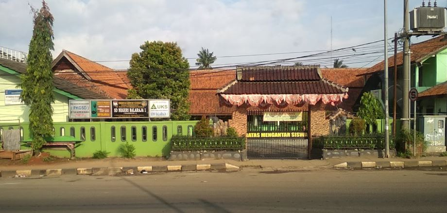
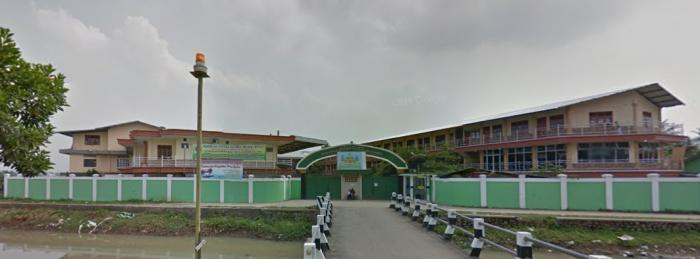

Perkenalkan nama saya Geyma Vancha Risma, saya adalah mahasiswa universitas Teknokrat Indonesia dari program studi Informatika angkatan 20.
saya disini akan bercerita tentang diri saya, Saya adalah seorang mahasiswa yang menyukai dunia pemrograman, saya belajar pemrograman dengan otodidak dan dibantu mengikuti kegiatan mahasiswa yaitu pemrograman teknokrat dan di pemrograman teknokrat saya di amanahkan menjadi tutor dalam divisi Tenesys.
Menjadi programmer dibidang Informatika yang unggul di bidang software engineering, soft computing, dan computer security dengan reputasi internasional.
Menyelenggarakan pendidikan tinggi di bidang software engineering, soft computing, dan computer security yang mengedepankan dan menjunjung tinggi tata nilai, norma, dan budaya.
2007 - 2013
SDN BALARAJA 1
SDN BALARAJA I adalah salah satu satuan pendidikan dengan jenjang SD di Balaraja, Kec. Balaraja, Kab. Tangerang, Banten. Dalam menjalankan kegiatannya, SDN BALARAJA I berada di bawah naungan Kementerian Pendidikan dan Kebudayaan,SDN BALARAJA I beralamat di JL. RAYA SERANG KM.24.5 TANGERANG, Balaraja, Kec. Balaraja, Kab. Tangerang, Banten.
2013 - 2016
PESANTREN MODERN DAARUL MUTTAQIEN II
Pesantren Darul Mutaaqien adalah kombinasi dari pesantren modern yaitu mengkombinasikan pendidikan formal dengan sistem asrama selama dua puluh empat jam juga kombinasi dengan pesantren salafiyah.Jenjang pendidikan di Pesantren Modern Daarul Muttaqien 2 Tangerang adalah : SMP,SMA.
2016 - 2019
PESANTREN MODERN DAARUL MUTTAQIEN II
Visi Pesantren Modern Daarul Muttaqien II adalah menjadi lembaga yang unggul dalam mutu, baik di bidang iman, ilmu maupun akhlaq. Sedangkan Misi nya adalah mencetak formal dan informal leader yang mukmin, alim dan amil yang berakhlaqul karimah.
Jl. Al-Muhajirin Raya No.17, Saga, Kec. Balaraja, Kabupaten Tangerang, Banten 15610
geyma_vancha_risma@teknokrat.ac.id
anlovescrew@gmail.com
0895377248001